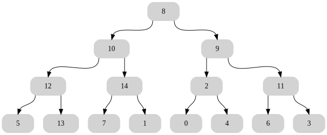
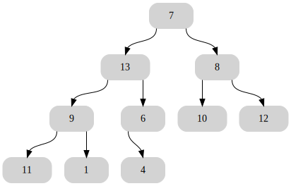

Questions de cours
Trouver une situation où la représentation sous forme d’arbre est adaptée, et donner un exemple d’arbre dans cette situation avec la signification des nœuds et des arêtes utilisées.
La racine d’un arbre en informatique est-elle en haut ou en bas d’un arbre? Combien de racines un arbre peut-il avoir?
Un arbre binaire parfait est un arbre qui est plein à chaque niveau de l’arbre, ce qui signifie que toutes les feuilles ont la même profondeur égale à la hauteur de l’arbre.

Arbre parfait de hauteur 4 Combien de nœuds y a-t-il dans un arbre binaire parfait de hauteur 2 ? de hauteur 3 ? de hauteur ?
Dans un arbre binaire complet, tous les étages sont remplis à l’exception du dernier où les nœuds sont rassemblés à gauche.

Arbre complet de hauteur 4 Donner un encadrement de la taille d’un arbre complet en fonction de sa hauteur ?
Quelle est la hauteur minimale d’un arbre de taille 7 ? de taille 77 ? de taille 777 ?
Les calculs écrits sur une calculatrice sont transformés en arbres binaires avec des nœuds de deux types: des nœuds d’opérations (+, -, * , /), et des nœuds de nombres (0, 1, …,9). Proposer l’écriture d’un arbre pour l’opération suivante:
5 * 4 + 3 * 2. Écrire les notations préfixe et postfixe de cet arbre.
Utilisation de la classe ArbreBinaire
En utilisant la classe ArbreBinaire définie dans le cours, construire l’arbre binaire suivant:

Expliquer comment afficher l’étiquette du nœud F en partant de la racine?
Arbre binaire
En utilisant la classe ArbreBinaire définie dans le cours, écrire de façon récursive les fonctions suivantes qui prennent un seul paramètre de type ArbreBinaire:
taille(arbre)renvoie la taille de l’arbre.prefixe(arbre)affiche les éléments lors du parcours de l’arbre en profondeur dans l’ordre préfixe.infixe(arbre)affiche les éléments lors du parcours de l’arbre en profondeur dans l’ordre infixe.postfixe(arbre)affiche les éléments lors du parcours de l’arbre en profondeur dans l’ordre postfixe.
En plus: Écrivez un algorithme non récursif pour effectuer une traversée dans l’ordre infixe d’un arbre. (AIDE: Votre algorithme aura besoin d’une pile pour que cela fonctionne.)
Implémentation d’un arbre binaire avec des tuples
Il est possible d’implémenter les arbres binaires avec des tuples (ou listes) imbriqués de longueur 3.
Un arbre vide sera représenté par un tuple vide: ().
Un nœud non vide sera représenté ainsi:
- l’index
0sera l’étiquette, - l’index
1sera le sous-arbre gauche: un tuple éventuellement vide, - l’index
2sera le sous-arbre droit: un tuple éventuellement vide.
Questions
Construire l’arbre suivant avec cette représentation:
 Domaine public, Lien
Domaine public, LienExpliquer comment accéder à l’étiquette du nœud 7(en partant de la racine) à partir de cette implémentation.
Implémenter les fonctions suivantes qui prennent en paramètre un arbre binaire représenté sous forme de tuples imbriqués:
taille(arbre)renvoie la taille de l’arbre.est_vide(arbre)renvoieTruesi l’arbre est videFalsesinon.prefixe(arbre)affiche les éléments lors du parcours de l’arbre en profondeur dans l’ordre préfixe.infixe(arbre)affiche les éléments lors du parcours de l’arbre en profondeur dans l’ordre infixe.postfixe(arbre)affiche les éléments lors du parcours de l’arbre en profondeur dans l’ordre postfixe.

Parcours en largeur
On utilise dans cet exercice la classe ArbreBinaire vue en cours pour représenter les arbres.
Écrire une procédure itérative de parcours_largeur(arbre) qui affiche les éléments d’un arbre donné en argument de haut en bas et de gauche à droite(parcours en largeur).
On donne ci-dessous le pseudo-code issu de l’article Wikipédia anglais sur le parcours d’arbres Breadth First Search en anglais.
levelorder(root)
q ← empty queue
q.enqueue(root)
while not q.isEmpty() do
node ← q.dequeue()
visit(node)
if node.left ≠ null then
q.enqueue(node.left)
if node.right ≠ null then
q.enqueue(node.right)